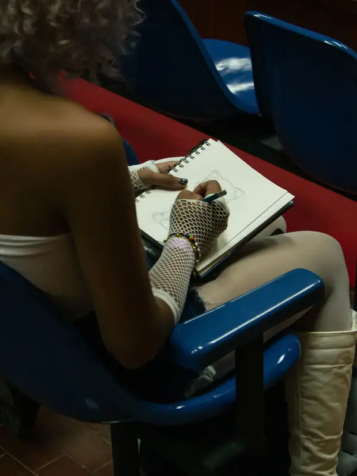

Luces de Navidad en Venezuela: el brillo que habita en nuestra memoria
Concurso de dibujo en vivo del Reto Creativo Fest en Caracas. Sábado 5 de diciembre en el Sótano de FACES, Universidad Central de Venezuela.
Requisitos
- Tener al menos 15 años.
- Registrarte en el formulario, pagar el cover y estar presente en la premiación a las 3:00 p.m.
- Técnica tradicional (no se permiten acuarelas ni acrílicos).
- Obra original, sin copias y sin usar el celular mientras dibujas.
Los participantes menores de 18 años deben participar bajo la supervisión de su representante legal, quien deberá autorizar su participación de forma expresa al momento de la inscripción. Esta autorización incluye la publicación del nombre artístico, las obras y las fotografías del menor en los medios del Reto Creativo Fest y Mente Milenial.
Programa del sábado 5
Horarios sujetos a confirmación.
- Primer lote de participantesSótano de FACES
- Segundo lote de participantesSótano de FACES
- Tercer lote de participantesSótano de FACES
- Cuarto lote de participantesSótano de FACES
- DescansoDeliberación del jurado
- Premiación principalAuditorio naranja de FACES - UCV
- Cierre del evento
Conoce al jurado
Tres artistas de la comunidad evaluarán los dibujos del concurso en vivo y elegirán a los 4 ganadores del sábado 5 de diciembre.
La decisión del jurado se anuncia en la premiación, a las 3:00 p. m.
Así funciona
4 premios
Serán elegidos 4 dibujos, elegidos por un jurado y anunciados en la premiación a las 3:00 P.M. en FACES - UCV.
Tendrás 45
Minutos para hacer tu dibujo completo, de principio a fin. Respeta tu turno de inscripción y las reglas del espacio.
IMPORTANTE
Se fomenta la creación de obras 100% originales, por lo que no se permitirá el uso de dispositivos o referencias durante el proceso de dibujo.
- Patrimonio y memoria colectiva: Recuerdos de infancias navideños, juguetes tradicionales venezolanos bajo el árbol o costumbres arraigadas que se transmiten de generación en generación.
- Tradiciones y costumbres familiares: Cenas navideñas tradicionales (hallacas, pan de jamón, pernil, ensalada de gallina), la reunión en familia y la calidez del hogar. El pesebre o nacimiento, las luces de los avisos y calles tradicionales, el arbolito de Navidad y los adornos típicos.
- Contenido político: El concurso es cultural y artístico. No se admitirán símbolos, personajes o consignas de carácter político-partidista.
- Temas de denuncia social extrema: Aunque reconocemos todas las realidades, este concurso busca resaltar las «maravillas»; evita imágenes de violencia, escasez o crisis.
- Contenido ofensivo: No se aceptarán dibujos que promuevan el odio, la discriminación o lenguaje obsceno.
- Mitos, leyendas y próceres.